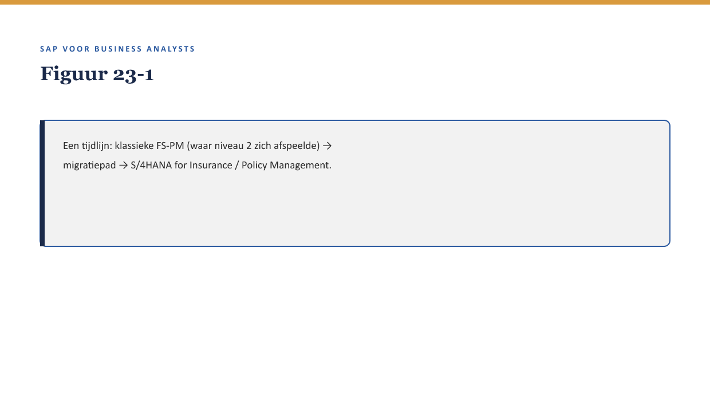

Cursus SAP voor Business Analysts · Niveau 3 (Expert) · Deel 23 van 30
S/4HANA for Insurance: wat verandert er
Bij de capstone (deel 22) beoordeelde de financeconsultant-rol steeds of het ontwerp “toekomstbestendig” was — een vraag die niveau 2 bewust openliet. Priya brengt hem nu terug: “Alles wat je in FS-PM hebt geleerd, is gebouwd op de klassieke laag. Meridiaan overweegt uiteindelijk ook een overstap naar S/4HANA. Wat verandert daarmee?”
11secties
±30minleestijd + werkboek
6werkboekopdrachten
2figuren
Positionering. Deze Ductus-opleiding leert business analisten SAP zelfstandig lezen en beoordelen in een SAP-implementatietraject — geen configuratie- of programmeercursus, wel de vaardigheid om een consultant en ontwikkelaar te kunnen tegenspreken. Dit materiaal is onafhankelijk ontwikkeld door Ductus B.V. en niet gelieerd aan of goedgekeurd door SAP SE.
Niveau 3: Deel 23 — S/4HANA for Insurance: wat verandert er (hier) → Deel 24 — Case: een proces implementeren → Deel 25 — Debugging & runtime-analyse → Deel 26 — BTP & extensibility → Deel 27 — IFRS17/FPSL: de samenvatting → Deel 28 — Wtp als toepassingslaag → Deel 29 — Governance & auditeerbaarheid → Deel 30 — Masterproef
01
Leerdoelen
⏱ 3 min
Na dit deel kun je:
uitleggen dat FS-PM leeft doorleeft binnen S/4HANA als Policy Management, niet als een aflopend product;
concrete verschillen benoemen tussen de klassieke FS-PM-laag (waarop niveau 2 grotendeels leunde) en Policy Management in S/4HANA;
het migratiepad voor Meridiaan op hoofdlijnen schetsen: wat blijft, wat verandert, wat vergt aandacht;
de vragen formuleren die een BA in een migratieproject anders moet stellen dan in een greenfield-implementatie;
de disclaimer-methode (↗ deel 1 §4.3) toepassen op het meest actuele en meest onzekere onderwerp van de hele cursus.
Studielast: één dagdeel klassikaal, circa drie uur zelfstudie.
02
De vraag die de capstone van niveau 2 openliet
⏱ 3 min
Bij de capstone (deel 22) beoordeelde de financeconsultant-rol steeds of het ontwerp “toekomstbestendig” was — een vraag die niveau 2 bewust openliet. Priya brengt hem nu terug: “Alles wat je in FS-PM hebt geleerd, is gebouwd op de klassieke laag. Meridiaan overweegt uiteindelijk ook een overstap naar S/4HANA. Wat verandert daarmee?”

Figuur 23-1 — Een tijdlijn: klassieke FS-PM (waar niveau 2 zich afspeelde) → migratiepad → S/4HANA for Insurance / Policy Management.
03
Waarom dit voor de BA telt
⏱ 3 min
Waarom dit voor de BA telt
Dit is precies het hiaat dat bij de evaluatie van de eerdere versie van deze leerreeks werd geconstateerd: BTX/FS-PM werd behandeld vanuit het klassieke model, zonder de S/4HANA-specifieke laag. Voor een BA die vandaag instroomt bij een verzekeraar is dat verschil toenemend relevant — niet als vervanging van niveau 2, maar als noodzakelijke aanvulling erop.
04
FS-PM leeft door — geen einde levenscyclus, wel verandering
⏱ 3 min
Onderzoek naar de certificerings- en levenscyclusstatus van FS-PM (uitgevoerd bij de opzet van deze cursus, zie OPZET-document) wijst op een patroon: SAP herpositioneert de losse FS-*-modules als onderdelen van een bredere S/4HANA Insurance-suite. Dit is eerder een integratie/rebranding dan een aangekondigd einde-levenscyclus met vervanger. Voor Meridiaan betekent dit: het BTX-model en de productlogica (↗ deel 11-12) die niveau 2 leerde, blijven in essentie overeind — de S/4HANA-laag verandert vooral hoe dat model werkt, niet wat het doet.
Kernzin
Dit is een van de weinige plekken in de cursus waar de disclaimer-methode (deel 1 §4.3) zelf onderwerp van gesprek wordt: de concepten uit niveau 2 blijven stabiel, maar de precieze implementatiedetails van “Policy Management in S/4HANA” zijn nog volop in ontwikkeling bij SAP zelf — verifieer de actuele stand bij aanvang van een concreet migratieproject, sterker nog dan bij andere onderwerpen in deze cursus.
05
Wat concreet verandert
⏱ 3 min
Het datamodel
Net als bij de Universal Journal (↗ deel 1 §4.1, deel 15 §4) profiteert Policy Management in S/4HANA van een geïntegreerder onderliggend datamodel — met als praktisch gevolg voor een BA vooral snellere, meer samenhangende rapportage over polissen en hun BTX-geschiedenis.
De interfaces
Waar niveau 2 grotendeels sprak over configuratie via klassieke schermen, verschuift S/4HANA verder richting Fiori-apps (↗ deel 2 §4.2) voor polisbeheer — een BA die alleen de klassieke navigatie kent, zal in een S/4HANA-omgeving andere schermen tegenkomen voor dezelfde onderliggende BTX-logica.
Extensibility
Waar niveau 2 uitbreidingen besprak via user exits en BAdI’s (↗ deel 6 §4), biedt S/4HANA aanvullende, modernere extensibility-patronen — dit is zo belangrijk dat het een eigen deel krijgt (deel 26, BTP & extensibility) in plaats van hier terloops behandeld te worden.
Figuur 23-2 — Drie verandergebieden naast elkaar: datamodel, interfaces, extensibility — met bij elk een pijl naar "wat blijft hetzelfde" en "wat verandert".
06
Het migratiepad: wat een BA anders moet vragen
⏱ 3 min
In een migratieproject (in tegenstelling tot een greenfield-implementatie zoals Meridiaans oorspronkelijke FS-PM-traject) is de BA-rol net iets anders: niet alleen “past dit bij wat de organisatie nodig heeft” (↗ deel 9 §4), maar ook “wat verandert er voor bestaande, al lopende polissen en BTX-geschiedenis bij deze overstap?”
Drie vragen die specifiek bij een migratie horen:
“Blijft de bestaande BTX-geschiedenis (↗ deel 11, deel 16 documentflow) volledig traceerbaar na de overstap, of gaat daar iets van verloren?”
“Welke custom code of uitbreidingen (↗ deel 5-6, niveau 1) moeten opnieuw worden beoordeeld — werken ze nog, of vergen ze aanpassing aan het nieuwe extensibility-model?”
“Is er een periode waarin het oude en nieuwe systeem naast elkaar draaien, en wat betekent dat voor lopende claims (↗ deel 13-14) die de overstap ‘meemaken’?”
Kernzin
Een migratie is geen nieuwe implementatie met dezelfde vragen als niveau 1-9 leerden — het is een implementatie met een extra laag vragen over continuïteit van wat al bestaat.
07
Terug naar Meridiaan
⏱ 3 min
Op het moment van dit deel heeft Meridiaan nog geen definitief besluit genomen over een S/4HANA-overstap. Dat is bewust: het punt van dit deel is niet dat je een migratie al kunt plannen, maar dat je de vragen kunt formuleren die vóór zo’n besluit beantwoord moeten worden — inclusief het advies om, wanneer dat besluit concreet wordt, de actuele SAP-roadmap en het eigen Learning Hub-account te raadplegen (↗ OPZET §1).
08
Kruisverwijzingen
⏱ 3 min
↗ Deel 1 §4.1, deel 15 §4: Universal Journal als eerder voorbeeld van hetzelfde datamodel-patroon.
↗ Deel 26: BTP & extensibility, de volledige uitwerking van §4.3.
↗ Deel 24: de verzekeringscasus, nu getoetst aan zowel de klassieke als de S/4HANA-laag.
FS-PM leeft door binnen S/4HANA als Policy Management — geen einde levenscyclus, wel verandering in hoe het werkt.
Drie gebieden veranderen concreet: het datamodel, de interfaces, en extensibility-patronen.
De conceptuele kern uit niveau 2 (BTX, productlogica) blijft grotendeels stabiel — verifieer implementatiedetails extra zorgvuldig bij dit onderwerp.
Een migratieproject vergt een extra laag vragen over continuïteit, naast de gewone fit-gap-vragen uit niveau 1-9.
Meridiaan heeft nog geen migratiebesluit genomen — dit deel leert de vragen, niet de planning.
11
Werkboek — opdrachten
⏱ 5 min
Vijf opdrachten en een oefentoets van tien vragen.
Werkboekopdrachten
Uit Werkboek deel 23, letterlijk overgenomen (inclusief uitwerkingen)
Opdracht 23.1 — Blijft of verandert? (15 min, individueel)
Categoriseer: blijft grotendeels stabiel (concept), of verandert concreet (implementatie)?
a. Het BTX-model met de zes categorieën. b. De precieze schermen waarmee polisbeheer wordt uitgevoerd. c. De onderliggende gedachte dat elke polisgebeurtenis traceerbaar wordt vastgelegd. d. Welke extensibility-technieken beschikbaar zijn voor uitbreidingen.
✓UitwerkingToon antwoord
a. Blijft (concept). b. Verandert (implementatie, richting Fiori). c. Blijft (concept). d. Verandert (nieuwe extensibility-patronen, deel 26).
Opdracht 23.2 — Drie migratievragen toepassen (15 min, tweetallen)
Formuleer, met de drie vragen uit reader §5, hoe je die specifiek zou toepassen op Meridiaans FS-PM-implementatie uit niveau 2.
✓Uitwerking — richtinggevendToon antwoord
Bijvoorbeeld: “Blijft de BTX-geschiedenis van polissen die al vóór de migratie bestonden (inclusief de historische kortingsregel uit niveau 1) volledig traceerbaar?” En: “De custom uitbreidingen die Jelle voor Meridiaan-specifieke regels bouwde — moeten die opnieuw beoordeeld worden onder het nieuwe extensibility-model?”
Opdracht 23.3 — De disclaimer op zichzelf toegepast (15 min, individueel)
Leg uit waarom reader §3, kernzin, zegt dat dit deel de disclaimer-methode “zelf onderwerp van gesprek” maakt, in plaats van hem alleen toe te passen zoals in eerdere delen.
✓UitwerkingToon antwoord
In eerdere delen was de disclaimer een vaste, stabiele achtergrondregel: concepten blijven, implementatiedetails verifieer je. Bij S/4HANA for Insurance is zelfs de grens tussen concept en implementatiedetail zelf nog in beweging, omdat SAP de S/4HANA Insurance-suite actief doorontwikkelt — de disclaimer geldt hier dus met extra nadruk, niet als routine-voetnoot.
Opdracht 23.4 — Migratie versus greenfield (15 min, groepjes van drie)
Bedenk twee extra risico’s die specifiek bij een migratie horen (in tegenstelling tot Meridiaans oorspronkelijke greenfield FS-PM-traject uit niveau 1-2).
✓Uitwerking — richtinggevendToon antwoord
Lopende, nog niet afgeronde BTX’s of claims die “de overstap meemaken” — wat gebeurt daarmee tijdens de overgang?
Bestaande koppelingen (↗ deel 7, niveau 1) die op de oude laag zijn gebouwd, en mogelijk opnieuw getest moeten worden tegen de nieuwe laag.
Opdracht 23.5 — Je eigen migratie-ervaring (10 min, individueel, huiswerk)
Heb je ooit een systeemmigratie meegemaakt (in SAP of daarbuiten)? Welke continuïteitsvraag bleek achteraf het belangrijkst?
✓Uitwerking — begeleidingsnotitieToon antwoord
Geen vast antwoord; bespreek kort in de volgende sessie.
Oefentoets — tien vragen
1. Wat is de status van FS-PM binnen S/4HANA, volgens dit deel? A. Volledig uitgefaseerd zonder vervanger. B. Leeft door als Policy Management, geen einde levenscyclus. C. Onbekend en niet te onderzoeken. D. Identiek aan de klassieke laag zonder enig verschil.
2. Wat blijft grotendeels stabiel bij de overstap naar S/4HANA? A. Niets. B. De conceptuele kern: het BTX-model en de productlogica. C. Alle transactiecodes exact hetzelfde. D. De extensibility-technieken.
3. Welke drie gebieden veranderen concreet? A. Niets verandert. B. Datamodel, interfaces, extensibility. C. Alleen de prijs. D. Alleen de naam van het product.
4. Waarom is dit onderwerp een van de weinige waar de disclaimer-methode zelf onderwerp van gesprek wordt? A. Geen reden. B. Zelfs de grens tussen concept en implementatiedetail is hier nog in beweging. C. De disclaimer geldt hier niet. D. Dit is het enige stabiele onderwerp in de cursus.
5. Wat is een vraag die specifiek bij een migratie hoort, niet bij een greenfield-implementatie? A. “Past dit bij wat de organisatie nodig heeft?” B. “Blijft de bestaande BTX-geschiedenis volledig traceerbaar na de overstap?” C. “Wie is de BA?” D. “Wat is een tabel?”
6. Waarom krijgt extensibility een eigen deel (26) in plaats van hier volledig behandeld te worden? A. Het is te onbelangrijk. B. Het onderwerp is zo omvangrijk dat het een eigen behandeling verdient. C. Extensibility bestaat niet in S/4HANA. D. Dit deel gaat niet over extensibility.
7. Wat is het praktische gevolg van het geïntegreerdere datamodel voor een BA? A. Niets merkbaars. B. Snellere, meer samenhangende rapportage over polissen. C. Alleen technische documentatie verandert. D. Het datamodel wordt trager.
8. Heeft Meridiaan al een definitief migratiebesluit genomen? A. Ja, allang. B. Nee, dit deel leert de vragen, niet de planning. C. Het is niet relevant. D. Migratie wordt nooit overwogen.
9. Wat is het advies bij een concreet wordend migratiebesluit? A. Niets ondernemen. B. De actuele SAP-roadmap en Learning Hub raadplegen. C. Alleen op deze cursus vertrouwen zonder verificatie. D. Het besluit negeren.
10. Wat onderscheidt een migratieproject van een greenfield-implementatie voor de BA-rol? A. Geen verschil. B. Een extra laag vragen over continuïteit van wat al bestaat. C. De BA-rol vervalt bij migratie. D. Migraties vergen geen fit-gap-analyse.
✓AntwoordenToon antwoord
1B 2B 3B 4B 5B 6B 7B 8B 9B 10B
Verder naar deel 24
Deel 24 — Case: een proces implementeren — bouwt voort op wat hier is behandeld.